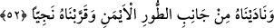
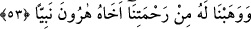

Allah için; Allah uğrunda ortaya koyması, harcamasıdır. En üst derecesi ise bedenlerin
hapsinden kurtulması; Allah’ta fânî olup Allâh’ın varlığı ile bâkî olmasıdır.
“Ve hem rasûl, hem de nebî idi.” Allah onu insanlara gönderdi, o da insanlara
Allâh’ı haber verdi. Bundan dolayı rasûl olmak daha özel bir vasıf olduğu halde âyette
nebî olmaktan önce getirilmiştir. Fakir (Bursevî) der ki: kelimesinin sona bırakılması
fâsılalara uymak içindir.
52. Ona Tûr’un sağ tarafından seslendik ve onu, özel konuşmak için (kendimize)
yaklaştırdık.
“Ona Tûr’un sağ tarafından seslendik” Tûr, Mısır ve Medyen arasındaki bir dağın
ismidir. Sağ aslında solun zıddıdır. Yani buradaki sağ Mûsâ (a.s.)’ın sağ tarafıdır, yoksa
dağın sağı veya solu olmaz. Ya da “el-yümn (bereket)” kökünden; ‘Onun bereketli
tarafından seslendik’ demektir. Allâh’ın sağ taraftan seslenmesinin mânâsı, kelamın ona
o cihetten temessül etmesidir.
Celâleyn’de şöyle der: “Mûsâ, Medyen tarafından yola çıktı, Mısır’a gitmek
istiyordu. Mûsâ’nın sağındaki dağın tarafında bulunan bir ağaçtan ona seslenildi.”
“Ve onu, özel konuşmak için” kendimize “yaklaştırdık.” Buradaki yaklaştırma,
şereflendirmek için olan yaklaştırmadır. Onun durumu, bir padişahın özel konuşmak için
kendisine yaklaştırdığı kimsenin durumuna benzetilmiştir. Nitekim Allah onu seçip
kendisine o kadar yaklaştırmıştır ki bir meleğin aracılığı olmaksızın onunla
konuşmuştur.
53. Ona, rahmetimizden dolayı kardeşi Hârun’u da peygamber olarak armağan
ettik.
“Ona, rahmetimizden dolayı” Yani acıdığımız ve merhamet ettiğimiz için ona
yardımcı ve vezir olsun diye “kardeşi Harun’u da peygamber olarak armağan ettik.”
Nitekim Mûsâ (a.s.): “Ailemden bana bir vezir ver” (Tâhâ, 20/29) diye Allâh’a duâ
etmişti.
Âyetteki armağan etme/bağışlama, zâhirî anlamda kullanılmıştır. “Ona İshâk ve
Yakûb’u armağan ettik” (el-En’âm, 6/84) âyetinde de aynı durum söz konusudur.
Hârun (a.s.), Mûsâ (a.s.)’dan daha yaşlı idi. Bundan dolayı onun vezirliğini Mûsâ
(a.s.)’a destek olma ve ağırlığını yüklenme şeklinde yorumlamak gerekir.